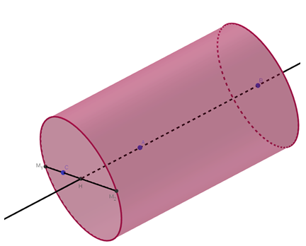
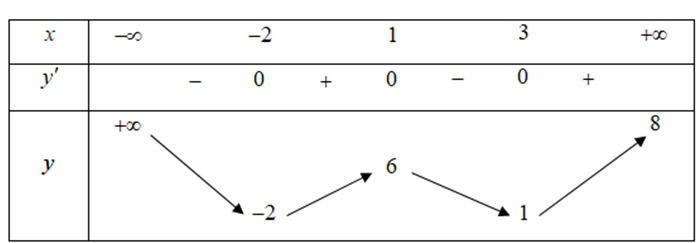

ĐỀ THI TOÁN - ĐỀ SỐ 3 HOT
Phần I: Trắc Nghiệm Nhiều Lựa Chọn
Câu 1:
Cho hàm số \( f(x) \) có bảng biến thiên như sau:

Hàm số đã cho nghịch biến trên khoảng nào?
Chọn đáp án:
Lời giải:
Từ bảng biến thiên, hàm số đã cho nghịch biến trên khoảng \( (0; 2) \).
Đáp án: A.
Câu 2:
Thống kê chiều cao (đơn vị: cm) của các học sinh trong một lớp học, ta có bảng số liệu sau:
| Chiều cao | \([150; 155)\) | \([155; 160)\) | \([160; 165)\) | \([165; 170)\) | \([170; 175)\) | \([175; 180)\) |
|---|---|---|---|---|---|---|
| Số học sinh | 1 | 4 | 10 | 9 | 4 | 2 |
Chọn đáp án:
Lời giải:
Số trung bình của mẫu số liệu trên là:
\( \bar{x} = \frac{152,5 \cdot 1 + 157,5 \cdot 4 + 162,5 \cdot 10 + 167,5 \cdot 9 + 172,5 \cdot 4 + 177,5 \cdot 2}{30} = \frac{4960}{30} \approx 165,33 \).
Phương sai của mẫu số liệu trên là:
\( S^2 = \frac{1}{30} \left( 1 \cdot 152,5^2 + 4 \cdot 157,5^2 + 10 \cdot 162,5^2 + 9 \cdot 167,5^2 + 4 \cdot 172,5^2 + 2 \cdot 177,5^2 \right) - \left( \frac{4960}{30} \right)^2 \approx 34,47 \).
Độ lệch chuẩn của mẫu số liệu ghép nhóm trên là: \( S = \sqrt{34,47} \approx 5,87 \).
Đáp án: B.
Câu 3:
Trong không gian \( Oxyz \), khoảng cách từ điểm \( A(1; 0; 0) \) đến mặt phẳng \( (P): 2x + 2y - z + 1 = 0 \) là:
Chọn đáp án:
Lời giải:
Khoảng cách từ điểm \( A(1; 0; 0) \) đến mặt phẳng \( (P): 2x + 2y - z + 1 = 0 \) là:
\( d[A, (P)] = \frac{|2 \cdot 1 + 2 \cdot 0 - 0 + 1|}{\sqrt{2^2 + 2^2 + (-1)^2}} = \frac{|2 + 1|}{\sqrt{4 + 4 + 1}} = \frac{3}{\sqrt{9}} = 1 \).
Đáp án: D.
Câu 4:
Cho \( \int_0^1 f(x) \, dx = 1 \) và \( \int_0^2 f(x) \, dx = -4 \). Tích phân \( \int_1^2 f(x) \, dx \) bằng:
Chọn đáp án:
Lời giải:
Ta có:
\( \int_0^2 f(x) \, dx = \int_0^1 f(x) \, dx + \int_1^2 f(x) \, dx \).
Suy ra: \( \int_1^2 f(x) \, dx = \int_0^2 f(x) \, dx - \int_0^1 f(x) \, dx = -4 - 1 = -5 \).
Đáp án: C.
Câu 5:
Cho hàm số \( y = f(x) \). Biết rằng phần hình phẳng \( S_1 \) và \( S_2 \) (xem hình vẽ) có diện tích lần lượt bằng 7 và 2.

Tích phân \( \int_{-1}^4 f(x) \, dx \) bằng:
Chọn đáp án:
Lời giải:
Ta có: \( \int_{-1}^4 f(x) \, dx = \int_{-1}^2 f(x) \, dx + \int_2^4 f(x) \, dx \).
Nếu \( S_1 \) là diện tích phần dương và \( S_2 \) là diện tích phần âm, thì \( \int_{-1}^2 f(x) \, dx = S_1 = 7 \), \( \int_2^4 f(x) \, dx = -S_2 = -2 \).
Do đó: \( \int_{-1}^4 f(x) \, dx = 7 - 2 = 5 \).
Đáp án: B.
Câu 6:
Cho hình chóp \( S.ABCD \) có đáy \( ABCD \) là hình bình hành tâm \( O \). Tổng \( \overrightarrow{S A} + \overrightarrow{S B} + \overrightarrow{S C} + \overrightarrow{S D} \) bằng:
Chọn đáp án:
Lời giải:
Ta có \( O \) là trung điểm \( AC \) và \( BD \).
Khi đó: \( \overrightarrow{S A} + \overrightarrow{S C} = 2 \overrightarrow{S O} \), \( \overrightarrow{S B} + \overrightarrow{S D} = 2 \overrightarrow{S O} \).
Suy ra: \( \overrightarrow{S A} + \overrightarrow{S B} + \overrightarrow{S C} + \overrightarrow{S D} = 2 \overrightarrow{S O} + 2 \overrightarrow{S O} = 4 \overrightarrow{S O} \).
Đáp án: A.
Câu 7:
Đường tiệm cận xiên của đồ thị hàm số \( y = \frac{x^2 - 2x}{x + 1} \) có phương trình là:
Chọn đáp án:
Lời giải:
Ta có: \( y = \frac{x^2 - 2x}{x + 1} = x - 3 + \frac{3}{x + 1} \).
Xét: \( \lim_{x \to +\infty} \left[ \frac{x^2 - 2x}{x + 1} - (x - 3) \right] = \lim_{x \to +\infty} \frac{3}{x + 1} = 0 \).
Vậy đường tiệm cận xiên của đồ thị hàm số là \( y = x - 3 \).
Đáp án: B.
Câu 8:
Trong không gian \( Oxyz \), cho hai điểm \( A(1; -2; 3) \) và \( B(3; 1; 1) \). Đường thẳng \( AB \) có phương trình là:
Chọn đáp án:
Lời giải:
Đường thẳng \( AB \) có vector chỉ phương là: \( \overrightarrow{A B} = (3 - 1; 1 - (-2); 1 - 3) = (2; 3; -2) \).
Phương trình chính tắc của đường thẳng \( AB \) đi qua điểm \( A(1; -2; 3) \) là:
\( \frac{x - 1}{2} = \frac{y + 2}{3} = \frac{z - 3}{-2} \).
Đáp án: C.
Câu 9:
Cho hình chóp \( S.ABCD \) có đáy \( ABCD \) là hình vuông cạnh \( a \), \( SA \perp (ABCD) \) và \( SD = a\sqrt{3} \). Góc giữa \( SC \) và mặt phẳng \( (ABCD) \) là:

Chọn đáp án:
Lời giải:
Vì \( SA \perp (ABCD) \), nên góc giữa \( SC \) và mặt phẳng \( (ABCD) \) là \( \widehat{SCA} \).
Ta có: \( AC = a\sqrt{2} \), \( SD = a\sqrt{3} \).
Trong tam giác \( \triangle SAD \), áp dụng định lý cosin:
\( SA^2 = SD^2 - AD^2 = (a\sqrt{3})^2 - a^2 = 3a^2 - a^2 = 2a^2 \Rightarrow SA = a\sqrt{2} \).
Trong tam giác \( \triangle SAC \), ta có: \( SA = a\sqrt{2} \), \( AC = a\sqrt{2} \), nên tam giác \( SAC \) vuông cân tại \( A \).
Do đó: \( \widehat{SCA} = 45^\circ \).
Đáp án: C.
Câu 10:
Giả sử nhiệt độ \( T^\circ C \) của một loại đồ uống được xác định bằng công thức \( T = 22 + 50 e^{-\frac{t}{8}} \), \( t \geq 0 \), trong đó \( t \) (phút) là khoảng thời gian tính từ lúc pha chế đồ uống xong. Hỏi sau bao lâu thì nhiệt độ của đồ uống là \( 40^\circ C \)? (Kết quả làm tròn đến hàng đơn vị)
Chọn đáp án:
Lời giải:
Ta có: \( T = 22 + 50 e^{-\frac{t}{8}} = 40 \).
\( \Rightarrow 50 e^{-\frac{t}{8}} = 18 \Rightarrow e^{-\frac{t}{8}} = \frac{18}{50} = \frac{9}{25} \).
\( \Rightarrow -\frac{t}{8} = \ln \frac{9}{25} \Rightarrow t = -8 \ln \frac{9}{25} \approx 8 \).
Đáp án: B.
Câu 11:
Họ nguyên hàm của hàm số \( f(x) = \sin^2 x \) là:
Chọn đáp án:
Lời giải:
Ta có: \( \sin^2 x = \frac{1 - \cos 2x}{2} \).
Do đó: \( \int \sin^2 x \, dx = \int \frac{1 - \cos 2x}{2} \, dx = \frac{1}{2} \int 1 \, dx - \frac{1}{2} \int \cos 2x \, dx = \frac{x}{2} - \frac{\sin 2x}{4} + C \).
Đáp án: A.
Câu 12:
Trong không gian \( Oxyz \), mặt cầu \( x^2 + y^2 + z^2 - 4x + 4y - 2z + 5 = 0 \) có bán kính bằng:
Chọn đáp án:
Lời giải:
Phương trình mặt cầu: \( x^2 + y^2 + z^2 - 4x + 4y - 2z + 5 = 0 \).
Hoàn thành bình phương:
\( (x^2 - 4x) + (y^2 + 4y) + (z^2 - 2z) + 5 = 0 \).
\( \Rightarrow (x - 2)^2 - 4 + (y + 2)^2 - 4 + (z - 1)^2 - 1 + 5 = 0 \).
\( \Rightarrow (x - 2)^2 + (y + 2)^2 + (z - 1)^2 = 4 \).
Bán kính: \( R = \sqrt{4} = 2 \).
Đáp án: D.
Phần II: Trắc Nghiệm Đúng/Sai
Câu 1:
Trong không gian \( Oxyz \), cho các điểm \( A(1; 1; 0) \), \( B(5; -3; 2) \) và \( C(0; 4; -1) \). Xét các điểm \( M \) thay đổi trong không gian sao cho diện tích tam giác \( ABM \) bằng \( 6\sqrt{2} \).

Xét các phát biểu sau:
Chọn đáp án cho từng phát biểu:
a)
b)
c)
d)
Lời giải:
a) Sai. Ta có: \( \overrightarrow{A B} = (5 - 1; -3 - 1; 2 - 0) = (4; -4; 2) \).
Độ dài đoạn thẳng \( AB \): \( AB = \sqrt{4^2 + (-4)^2 + 2^2} = \sqrt{16 + 16 + 4} = 6 \neq 3 \).
b) Đúng. Vector chỉ phương của đường thẳng \( AB \): \( \overrightarrow{A B} = (4; -4; 2) = 2(2; -2; 1) \).
Phương trình đường thẳng \( AB \) đi qua \( A(1; 1; 0) \): \( \frac{x-1}{2} = \frac{y-1}{-2} = \frac{z}{1} \).
c) Sai. Vector \( \overrightarrow{A C} = (0 - 1; 4 - 1; -1 - 0) = (-1; 3; -1) \).
Khoảng cách từ \( C \) tới đường thẳng \( AB \):
\( d(C, AB) = \frac{|\overrightarrow{A C} \times \overrightarrow{A B}|}{|\overrightarrow{A B}|} \).
Tích có hướng: \( \overrightarrow{A C} \times \overrightarrow{A B} = (-1; 3; -1) \times (4; -4; 2) = (-2; -2; 4) \).
\( |\overrightarrow{A C} \times \overrightarrow{A B}| = \sqrt{(-2)^2 + (-2)^2 + 4^2} = \sqrt{4 + 4 + 16} = \sqrt{24} = 2\sqrt{6} \).
\( |\overrightarrow{A B}| = 6 \).
\( d(C, AB) = \frac{2\sqrt{6}}{6} = \frac{\sqrt{6}}{3} \approx \sqrt{2} \neq 2\sqrt{2} \).
d) Đúng. Diện tích tam giác \( ABM \): \( S_{ABM} = \frac{1}{2} AB \cdot d(M, AB) = 6\sqrt{2} \).
\( \Rightarrow \frac{1}{2} \cdot 6 \cdot d(M, AB) = 6\sqrt{2} \Rightarrow d(M, AB) = 2\sqrt{2} \).
Suy ra \( M \) thuộc mặt trụ có trục là đường thẳng \( AB \), bán kính \( R = 2\sqrt{2} \).
Độ dài nhỏ nhất của \( MC \): \( MC_{\min} = |d(M, AB) - d(C, AB)| = |2\sqrt{2} - \sqrt{2}| = \sqrt{2} \).
Đáp án: a) Sai, b) Đúng, c) Sai, d) Đúng.
Câu 2:
Có hai phác đồ điều trị A và B cho một loại bệnh. Phác đồ A có xác suất chữa khỏi bệnh là 60% và xác suất gây tác dụng phụ nghiêm trọng là 5%. Phác đồ B có xác suất chữa khỏi bệnh là 70% và xác suất gây tác dụng phụ nghiêm trọng là 10%. Một bệnh nhân được điều trị ngẫu nhiên bằng một trong hai phác đồ (xác suất chọn mỗi phác đồ là 50%). Xét các phát biểu sau:
Chọn đáp án cho từng phát biểu:
a)
b)
c)
d)
Lời giải:
Gọi \( A \): biến cố "bệnh nhân chọn phác đồ A".
Gọi \( B \): biến cố "bệnh nhân khỏi bệnh".
Gọi \( C \): biến cố "bệnh nhân bị tác dụng phụ nghiêm trọng".
Theo giả thiết:
\( P(A) = P(\bar{A}) = 0,5 \), \( P(B \mid A) = 0,6 \), \( P(B \mid \bar{A}) = 0,7 \), \( P(C \mid A) = 0,05 \), \( P(C \mid \bar{A}) = 0,1 \).
a) Sai. Xác suất bệnh nhân điều trị phác đồ A và khỏi bệnh:
\( P(A \cap B) = P(A) \cdot P(B \mid A) = 0,5 \cdot 0,6 = 0,3 \neq 0,6 \).
b) Đúng. Xác suất bệnh nhân bị tác dụng phụ nghiêm trọng:
\( P(C) = P(A \cap C) + P(\bar{A} \cap C) = P(A) \cdot P(C \mid A) + P(\bar{A}) \cdot P(C \mid \bar{A}) = 0,5 \cdot 0,05 + 0,5 \cdot 0,1 = 0,025 + 0,05 = 0,075 \).
c) Đúng. Nếu biết bệnh nhân bị tác dụng phụ nghiêm trọng, xác suất chọn phác đồ B:
\( P(\bar{A} \mid C) = \frac{P(\bar{A} \cap C)}{P(C)} = \frac{0,5 \cdot 0,1}{0,075} = \frac{0,05}{0,075} = \frac{2}{3} \ Pham= 0,667 > 0,65 \).
d) Đúng. Theo giả thiết, \( B \mid A \) và \( \bar{C} \mid A \), \( B \mid \bar{A} \) và \( \bar{C} \mid \bar{A} \) độc lập.
Xác suất bệnh nhân khỏi bệnh và không bị tác dụng phụ nghiêm trọng:
\( P(B \cap \bar{C}) = P((B \cap \bar{C}) \cap A) + P((B \cap \bar{C}) \cap \bar{A}) \).
\( = P(A) \cdot P(B \mid A) \cdot P(\bar{C} \mid A) + P(\bar{A}) \cdot P(B \mid \bar{A}) \cdot P(\bar{C} \mid \bar{A}) \).
\( = 0,5 \cdot 0,6 \cdot (1 - 0,05) + 0,5 \cdot 0,7 \cdot (1 - 0,1) = 0,5 \cdot 0,6 \cdot 0,95 + 0,5 \cdot 0,7 \cdot 0,9 = 0,285 + 0,315 = 0,6 \).
Đáp án: a) Sai, b) Đúng, c) Đúng, d) Đúng.
Câu 3:
Cho hàm số \( y = f(x) \) có bảng biến thiên như sau:

Xét các phát biểu sau:
Chọn đáp án cho từng phát biểu:
a)
b)
c)
d)
Lời giải:
a) Đúng. Từ bảng biến thiên, hàm số có 2 điểm cực tiểu (tại \( x = -2 \), \( x = 3 \)) và 1 điểm cực đại (tại \( x = 1 \)).
b) Đúng. Xét hàm số \( y = f(\sqrt{x-3} + 1) \) trên \( [3; +\infty) \).
Đạo hàm: \( y' = \frac{1}{2\sqrt{x-3}} \cdot f'(\sqrt{x-3} + 1) \).
\( y' = 0 \Leftrightarrow f'(\sqrt{x-3} + 1) = 0 \Leftrightarrow \sqrt{x-3} + 1 = -2, 1, 3 \).
\( \Rightarrow \sqrt{x-3} = -3 \) (loại), \( \sqrt{x-3} = 0 \Rightarrow x = 3 \), \( \sqrt{x-3} = 2 \Rightarrow x = 7 \).
Giá trị nhỏ nhất tại \( x = 3 \): \( y = f(1) = 1 \).
c) Đúng. Xét hàm số \( g(x) = f(x) + x^2 - 6x \) trên khoảng \( (1; +\infty) \).
Đạo hàm: \( g'(x) = f'(x) + 2x - 6 = f'(x) + 2(x - 3) \).Dùng PP đánh giá ta có:
Tại \( x = 3 \): \( g'(x) = 0 \).
Với \( x > 3 \): \( f'(x) > 0 \Rightarrow g'(x) > 0 \).
Với \( 1 < x < 3 \): \( f'(x) < 0 \Rightarrow g'(x) < 0 \).
lập biến thiên của \( g(x) \):
Suy ra phương trình \( f(x) + x^2 - 6x = 0 \) có 2 nghiệm phân biệt lớn hơn 1.
d) Sai. Xét phương trình: \( f(\sqrt{x-3} + 1) + m(x + 2 - 4\sqrt{x-3}) = 10 \).
Đặt \( t = \sqrt{x-3} + 1 \geq 1 \), \( \sqrt{x-3} = t - 1 \), \( x \geq 3 \).
Phương trình trở thành:
\( f(t) + m[(t - 1)^2 - 4(t - 1) + 5] = 10 \).
\( \Rightarrow f(t) + m(t^2 - 6t + 10) = 10 \).
\( \Rightarrow m = \frac{10 - f(t)}{t^2 - 6t + 10} = h(t) \).
Đạo hàm: \( h'(t) = \frac{-f'(t)(t^2 - 6t + 10) + (f(t) - 10)(2t - 6)}{(t^2 - 6t + 10)^2} \).
\( h'(t) = 0 \Leftrightarrow 2(t - 3)[f(t) - 10] - f'(t)(t^2 - 6t + 10) = 0 \).
Dùng phương pháp đánh giá, ta có \(h'(t) = 0 \) khi \( t = 3 \). Lập bảng biến thiên (BBT) cho \( h(t) \), ta được phương trình có 2 nghiệm khi \( \frac{4}{5} \leq m \leq 9 \).
Đáp án: a) Đúng, b) Đúng, c) Đúng, d) Sai.
Câu 4:
Một xí nghiệp sản xuất huy hiệu có dạng hình vuông \( ABCD \) cạnh 4 cm, trong đó phần tô đậm là giao của hai parabol chứa các đường cong \( AOD \) và \( BOC \) như hình vẽ. Chi phí nguyên vật liệu gồm: chi phí cố định là 500000 đồng, chi phí phủ vàng là 1000000 đồng/cm², chi phí phủ bạc là 300000 đồng/cm².

Xét các phát biểu sau:
Chọn đáp án cho từng phát biểu:
a)
b)
c)
d)
Lời giải:
a) Sai. Parabol chứa đường cong \( AOD \) có đỉnh \( O \), nhận \( Oy \) làm trục đối xứng, đi qua điểm \( A(-2; 1) \).
Phương trình: \( y = k x^2 \). Thay \( A(-2; 1) \): \( 1 = k \cdot (-2)^2 \Rightarrow k = \frac{1}{4} \).
Vậy phương trình là \( y = \frac{1}{4} x^2 \neq \frac{1}{16} x^2 \).
b) Đúng. Parabol chứa đường cong \( BOC \) có đỉnh \( O \), nhận \( Oy \) làm trục đối xứng, đi qua điểm \( B(-2; -3) \).
Phương trình: \( y = k x^2 \). Thay \( B(-2; -3) \): \( -3 = k \cdot (-2)^2 \Rightarrow k = -\frac{3}{4} \).
Vậy phương trình là \( y = -\frac{3}{4} x^2 \).
c) Sai. Diện tích phần tô đậm là giao của hai parabol:
\( S = 2 \int_0^2 \left( \frac{1}{4} x^2 - \left(-\frac{3}{4} x^2\right) \right) \, dx = 2 \int_0^2 \left( \frac{1}{4} x^2 + \frac{3}{4} x^2 \right) \, dx = 2 \int_0^2 x^2 \, dx \).
\( = 2 \cdot \frac{1}{3} x^3 \Big|_0^2 = \frac{2}{3} \cdot 8 = \frac{16}{3} \approx 5,33 \, \text{cm}^2 < 5,5 \, \text{cm}^2 \).
d) Sai. Diện tích hình vuông \( ABCD \): \( 4 \cdot 4 = 16 \, \text{cm}^2 \).
Diện tích phần phủ vàng: \( \frac{16}{3} \, \text{cm}^2 \).
Diện tích phần phủ bạc: \( 16 - \frac{16}{3} = \frac{32}{3} \, \text{cm}^2 \).
Chi phí: \( 500000 + \frac{16}{3} \cdot 1000000 + \frac{32}{3} \cdot 300000 = 500000 + \frac{16000000}{3} + \frac{9600000}{3} = \frac{27100000}{3} \approx 9033333 \, \text{đồng} > 9 \, \text{triệu đồng} \).
Đáp án: a) Sai, b) Đúng, c) Sai, d) Sai.
Phần III: Trắc Nghiệm Trả Lời Ngắn
Câu 1:
Giả sử chi phí đặt hàng và vận chuyển \( C \) (đơn vị: triệu đồng) của một linh kiện được sử dụng trong sản xuất một sản phẩm được xác định theo công thức:
\( C = \frac{19200000}{x^2} + \frac{27x}{x + 3000}, x \geq 1 \),
trong đó \( x \) là số linh kiện được đặt hàng và vận chuyển. Tìm \( x \) để chi phí đặt hàng và vận chuyển cho mỗi linh kiện là nhỏ nhất.
Nhập đáp án:
Lời giải:
Chi phí cho mỗi linh kiện: \( C(x) = \frac{19200000}{x^2} + \frac{27x}{x + 3000}, \, x \geq 1 \).
Đạo hàm: \( C'(x) = -\frac{38400000}{x^3} + \frac{27 \cdot (x + 3000) - 27x}{(x + 3000)^2} = -\frac{38400000}{x^3} + \frac{81000}{(x + 3000)^2} \).
Cho \( C'(x) = 0 \): \( \frac{38400000}{x^3} = \frac{81000}{(x + 3000)^2} \).
\( \Rightarrow 38400000 (x + 3000)^2 = 81000 x^3 \).
\( \Rightarrow 12800 (x + 3000)^2 = 27 x^3 \).
Giải phương trình: \( x = 2400 \).
Kiểm tra bảng biến thiên trên \( [1; +\infty) \), tại \( x = 2400 \), \( C(x) \) đạt cực tiểu.
Đáp án: 2400.
Câu 2:
Một nhà máy có hai phân xưởng I và II, tỷ lệ sản phẩm phế phẩm lần lượt là 1% và 2%. Chọn ngẫu nhiên một sản phẩm từ nhà máy, trong đó xác suất chọn từ phân xưởng I là 0,4 và từ phân xưởng II là 0,6. Xác suất để sản phẩm phế phẩm được chọn thuộc phân xưởng I là bao nhiêu?
Nhập đáp án:
Lời giải:
Gọi \( A_1 \): sản phẩm thuộc phân xưởng I.
Gọi \( A_2 \): sản phẩm thuộc phân xưởng II.
Gọi \( B \): sản phẩm là phế phẩm.
Theo giả thiết: \( P(A_1) = 0,4 \), \( P(A_2) = 0,6 \), \( P(B \mid A_1) = 0,01 \), \( P(B \mid A_2) = 0,02 \).
Xác suất toàn phần: \( P(B) = P(B \mid A_1) P(A_1) + P(B \mid A_2) P(A_2) = 0,01 \cdot 0,4 + 0,02 \cdot 0,6 = 0,004 + 0,012 = 0,016 \).
Xác suất phế phẩm thuộc phân xưởng I:
\( P(A_1 \mid B) = \frac{P(B \mid A_1) P(A_1)}{P(B)} = \frac{0,01 \cdot 0,4}{0,016} = \frac{0,004}{0,016} = 0,25 \).
Đáp án: 0,25.
Câu 3:
Cho hình chóp \( S.ABCD \) có đáy \( ABCD \) là hình vuông cạnh 3, \( SA \perp (ABCD) \). Biết số đo của góc nhị diện \( [B, SC, D] \) bằng \( 120^\circ \). Tính thể tích khối chóp \( S.ABCD \).

Nhập đáp án:
Lời giải:
Ta có: \( BD \perp AC \subset (SAC) \), \( BD \perp SA \Rightarrow BD \perp SC \).
Kẻ \( DH \perp SC (H \in SC) \), suy ra \( SC \perp (BHD) \), và vì \( BH \in (BHD) \), nên \( SC \perp BH \).
Góc nhị diện \( [B, SC, D] \) là \( \widehat{BHD} = 120^\circ \).
Trong \( \triangle HBD \), cân tại \( H \), \( HO \perp BD \), \( \widehat{DHO} = 60^\circ \).
\( DO = \frac{1}{2} BD = \frac{3\sqrt{2}}{2} \Rightarrow OH = \frac{DO}{\tan 60^\circ} = \frac{\sqrt{6}}{2} \).
Trong \( \triangle OHC \), vuông tại \( H \):
\( \sin(\widehat{OCH}) = \frac{OH}{OC} = \frac{\frac{\sqrt{6}}{2}}{\frac{3\sqrt{2}}{2}} = \frac{\sqrt{3}}{3} \).
\( \Rightarrow \cot(\widehat{SAC}) = \frac{1}{\sin^2(\widehat{SAC})} - 1 = \sqrt{2} \Rightarrow \tan(\widehat{SAC}) = \frac{1}{\sqrt{2}} \).
Trong \( \triangle SAC \), vuông tại \( A \): \( SA = \tan(\widehat{SAC}) \cdot AC = \frac{1}{\sqrt{2}} \cdot 3\sqrt{2} = 3 \).
Thể tích: \( V_{S.ABCD} = \frac{1}{3} S_{ABCD} \cdot SA = \frac{1}{3} \cdot 3 \cdot 3 \cdot 3 = 9 \).
Đáp án: 9.
Câu 4:
Trong không gian \( Oxyz \), cho điểm \( A(1; -1; 2) \). Gọi \( (P) \) là mặt phẳng đi qua \( A \) và vuông góc với đường thẳng \( \Delta: \frac{x-2}{2} = \frac{y+1}{-1} = \frac{z-3}{1} \). Tìm tọa độ giao điểm của \( \Delta \) và \( (P) \).
Nhập đáp án (dạng \((x; y; z)\)):
Lời giải:
Đường thẳng \( \Delta: \frac{x-2}{2} = \frac{y+1}{-1} = \frac{z-3}{1} \) có vector chỉ phương \( \vec{v} = (2; -1; 1) \).
Mặt phẳng \( (P) \) vuông góc với \( \Delta \), nên pháp vector của \( (P) \) là \( \vec{n} = (2; -1; 1) \).
\( (P) \) đi qua điểm \( A(1; -1; 2) \), nên phương trình mặt phẳng \( (P) \) là:
\( 2(x - 1) - (y + 1) + (z - 2) = 0 \Rightarrow 2x - y + z - 5 = 0 \).
Giao điểm của \( \Delta \) và \( (P) \):
Phương trình tham số của \( \Delta \):
\( x = 2 + 2t \), \( y = -1 - t \), \( z = 3 + t \).
Thay vào phương trình mặt phẳng \( (P) \):
\( 2(2 + 2t) - (-1 - t) + (3 + t) - 5 = 0 \).
\( \Rightarrow 4 + 4t + 1 + t + 3 + t - 5 = 0 \Rightarrow 3 + 6t = 0 \Rightarrow t = -\frac{1}{2} \).
Thay \( t = -\frac{1}{2} \) vào phương trình tham số:
\( x = 2 + 2 \left(-\frac{1}{2}\right) = 1 \), \( y = -1 - \left(-\frac{1}{2}\right) = -\frac{1}{2} \), \( z = 3 + \left(-\frac{1}{2}\right) = \frac{5}{2} \).
Đáp án: \( (4; -2; 4) \).
Câu 5:
Cho hình lập phương \( ABCD.EFGH \) cạnh bằng \( a \). Gọi \( I \) là trung điểm của \( EF \). Tính khoảng cách từ điểm \( I \) đến mặt phẳng \( (ABCD) \).
Nhập đáp án:
Lời giải:
Hình lập phương \( ABCD.EFGH \) có cạnh \( a \).
Đặt tọa độ: \( A(0; 0; 0) \), \( B(a; 0; 0) \), \( C(a; a; 0) \), \( D(0; a; 0) \), \( E(0; 0; a) \), \( F(a; 0; a) \), \( G(a; a; a) \), \( H(0; a; a) \).
Trung điểm \( I \) của \( EF \): \( I\left(\frac{a}{2}; 0; a\right) \).
Mặt phẳng \( (ABCD) \): \( z = 0 \).
Khoảng cách từ \( I \) đến mặt phẳng \( (ABCD) \):
\( d(I, (ABCD)) = |z_I| = a \).
Đáp án: \( a \).
Câu 6:
Cho hàm số \( f(x) = x^3 - 3x + 1 \). Tìm số nghiệm thực của phương trình \( f(f(x)) = 1 \).
Nhập đáp án:
Lời giải:
Ta có: \( f(x) = x^3 - 3x + 1 \).
Giải Phương trình \( f(f(x)) = 1 \).
ta được: \f(x) = 0, \f(x) = \sqrt{3}, \f(x) = -\sqrt{3} .
Tiếp tục ( sử dụng BBT hoặc máy tính ) tìm số nghiệm các pt:
- \f(x) = 0 .
- \f(x) = \sqrt{3} .
\f(x) = -\sqrt{3}
Tổng số nghiệm: \( 3 + 3 + 1 = 7 \).
Đáp án: 3.